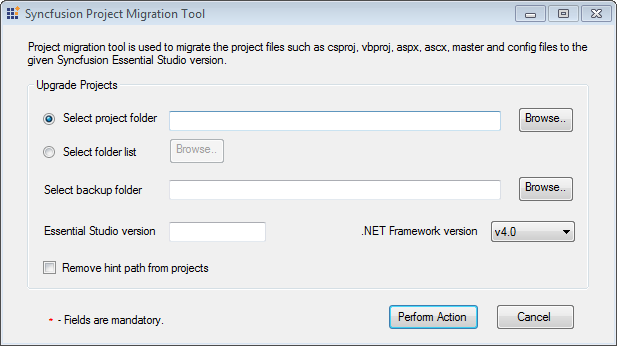

Project migration tool enables you to migrate the project files to the given Syncfusion Essential Studio Version.
The following steps illustrate how to migrate a project.
1. Click Start > All Program > Syncfusion > Essential Studio x.x.x.x > Tools > Project migration > Syncfusion Project Migration.

Figure 132: Syncfusion Project Migration
2. Select the required project to be upgraded in the Select project folder field.
 Note: You can also select multiple projects using
the Select folder list option.
Note: You can also select multiple projects using
the Select folder list option.
3. Select a folder to store a backup in the Select backup folder field.
4. Enter the Essential Studio version number in the Essential Studio version field.(Ex:10.1.0.44)
5. Select the required .NET version from the .NET Framework version drop-down.
6. Select the Remove hint path from project check box, if you want to remove the hint from the project.
7. Click Preform Action. The utility will upgrade the selected projects to the newer versions.